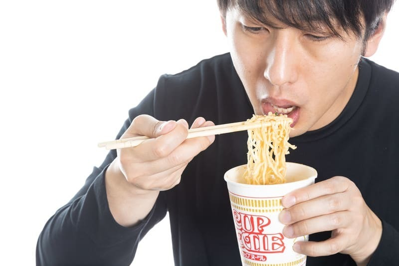

空気嚥下症の鍼灸
ストレスや噛み締め癖などで無意識に空気を過剰に飲み込み、げっぷや腹部膨満を起こす状態です。自律神経と胃腸を整えます。
まず知っておきたい要点と改善の流れ
空気嚥下症（呑気症）は、飲食時以外にも無意識に唾液と一緒に空気を過剰に飲み込むことで胃腸にガスが溜まり、げっぷや腹部膨満感、圧迫感、吐き気、頭痛、睡眠障害などを引き起こす状態です。精神的なストレスや不安、歯の噛み締め癖、噛み合わせ不良、早食いなどが深く関係します。まずは消化器内科等で胃腸の器質的疾患を除外したうえで、ストレスや生活習慣を含めて焦らず取り組むことが大切です。（公式解説）
このようなお悩みはありませんか？
- ✓頻繁にげっぷが出て人前で気になってしまう
- ✓上腹部の膨満感や圧迫感、おならが多くつらい
- ✓ストレス時に無意識に歯を噛み締める癖がある
- ✓お腹の張りに加えて吐き気や頭痛、睡眠障害がある
当院の施術アプローチ・改善の流れ
なぜ鍼灸で改善へ向かうのか？（作用機序の図解）
空気嚥下症に対する鍼灸は、耳周囲・頸部の微小循環改善と聴覚・粘膜調整機序を通じて、お体本来の回復力を引き出します。

翳風・風池・合谷など、耳鼻咽喉領域の神経・血管と連動する経穴へ繊細にアプローチします。
首・顎まわりの深層筋緊張を緩め、内耳や粘膜周囲の滞った血流とリンパ循環を促します。
ストレスや睡眠不足で高ぶった交感神経を鎮め、音への過敏反応や粘膜の過剰反応を和らげます。
標準治療を妨げない設計で、生活支障度（THI等）の軽減と再発しにくい体調づくりを支えます。
院長YouTube解説・関連動画
公開日：２０２１年 １０月２３日
更新日：２０２３年 １０月１７日
本日は空気嚥下症について解説させていただきます。

☆本記事の内容
- •空気嚥下症とは
- •空気嚥下症の原因
- •空気嚥下症の症状
- •空気嚥下症の改善方法
- •空気嚥下症のまとめ
- •空気嚥下症は、空気を過剰に嚥下し日常生活に支障が出る状態
- •空気嚥下症は精神的なストレスと強く関係している
- •空気嚥下症の症状は、上腹部の膨満感や圧迫感など
- •改善方法は、ストレス解消、噛み締め癖改善、食事
- •焦らず改善を行うことが大事
- •空気嚥下症に効果的なツボ
銀座そうぜん鍼灸院の宗前です。
このページを書いている私は、鍼灸師として１３年、担当した利用者様数８０，０００人を誇り、病気の休職者３００人を社会復帰できるまで回復させてきた実績があります。
空気嚥下症は精神的なストレスと強く関係している
空気嚥下症の原因はまだはっきりとわかっていません。今のところ、精神的なストレスと強く関係していると考えられています。特に緊張や不安が大きい時などに起きやすいと言われています。
さらに、早食いの人やがぶ飲みの人、口呼吸の人や常に唾液を飲む癖のある人などはより空気を飲み込みやすいため、起こりやすいと言われています。
さらに、歯の噛みしめも原因となることがあります。
空気嚥下症、または過度の空気摂取は、食事中や飲食物を摂取する際、あるいは嚥下動作時に過度に空気を飲み込むことを指します。この症状は、様々な原因によって引き起こされることがあります。
・食事習慣
速食い: 食事を急いで食べることで、食物と一緒に大量の空気を飲み込む可能性がある。
話しながらの食事: 話しながら食事をすると、口を開けた状態で空気を飲み込むことが増える。
噛まずに飲み込む: 十分に噛まずに食べ物を飲み込む行為は、飲み込む空気の量を増やす。
・飲食物の種類
炭酸飲料: 炭酸飲料を飲むとき、炭酸ガスを多く摂取することがあり、これが空気の飲み込みを促す。
ガムの噛みすぎ: ガムを長時間噛むと、無意識に空気を飲み込むことが増える
・口呼吸
鼻が詰まっている場合や、鼻呼吸が困難な場合に、口呼吸が増える。これにより、食事中や普段の生活の中で空気を飲み込む可能性が増える。
・ストレスや不安
緊張や不安、ストレスが高まると、呼吸が浅くなったり、頻繁になることがあり、これが空気の飲み込みを増加させる原因となる。
機能性ディスペプシアや逆流性食道炎:胃や食道に関する機能的な障害が存在する場合、空気を飲み込む量が増加することが知られている。
口腔内の問題:歯並びや噛み合わせの不具合、歯の欠損など、口腔内の問題が原因で空気を飲み込むことが増える場合がある。
嚥下障害:嚥下の動作が適切でない場合、空気を飲み込むことが増える可能性がある。
・意識的・無意識的な行動
一部の人々は、意識的あるいは無意識的に空気を飲み込む癖を持っている。
これらの原因を理解することで、空気嚥下症の改善や予防が期待できます。食事習慣の見直しや、ストレス管理、口腔内のケアなど、日常生活の中で注意を払うことが重要です。
空気嚥下症の症状は、上腹部の膨満感や圧迫感など
空気嚥下症の症状は、上腹部の膨満感や圧迫感、左上腹部や左側腹部の痛み、しゃっくり、胸焼けなどです。現れる痛みや膨満感などの症状は、げっぷや放屁をすることで軽くなります。
場合によっては、動悸や息切れ、頭痛やふらつきなどの症状が起こることもあります。腹部に関係して現れる症状に加えて人によって様々な症状が起こることもあるのです。
げっぷやガスが出る回数も増えます。さらにげっぷをすることで胃液や食べた物が逆流し、胸焼けが起き、逆流性食道炎になることもあります。
げっぷやおならを抑えようとすることでストレスになり、さらに空気を飲み込んでしまうこともあります。そのため、不安症が起こることもあります。
空気嚥下症は、過度に空気を飲み込むことによって生じる症状のことを指します。この症状は日常生活にさまざまな不快感やトラブルをもたらすことがあります。以下は、空気嚥下症に関連する主な症状の詳細です。
げっぷ:空気を飲み込むことで、胃に空気が溜まりやすくなり、げっぷを引き起こす可能性が高まります。特に食後や飲酒後にげっぷが増えることが多いです。
腹部膨満感:飲み込んだ空気が胃や腸に溜まることで、腹部が膨れるような感覚を覚えることがあります。これにより、腹部が重たく感じることがあります。
胃の痛みや不快感:胃に過度な空気が溜まることで、胃の圧迫感や痛みを感じることがある。特に食事の後に強くなることがあります。
放屁（おなら）の増加:腸に溜まった空気は、放屁として排出されることが多いです。これにより、放屁の回数が増加することがあります。
不整脈:一部の人々は、過度な空気の飲み込みが不整脈の原因となることが報告されています。特に、心臓の近くの食道に空気が溜まることで、心臓の動きに影響が出ることが考えられます。
胸部の不快感:空気が食道に溜まることで、胸部に圧迫感や痛みを感じることがあります。胸焼けや胸痛と間違えられることもあります。
呼吸困難:胸部や腹部に空気が溜まることで、呼吸がしにくくなることがあります。中でも、特に深呼吸をする際に不快感を覚えることが多くあります。
不安や焦燥感:色々な症状によって、日常生活に不安やストレスを感じることが増えます。特に公共の場でのげっぷや放屁を恐れて、外出を控えるようになることもあります。
これらの症状は、空気嚥下症に関連するものとして一般的に知られていますが、他の病気や症状とも重なる部分があるため、症状が気になる場合は専門家に相談しましょう。
空気嚥下症の改善方法は、積極的にストレス解消を行うこと、噛み締める癖を改善すること、食事に気をつけることです。
好きなことをする時間を作ったり、深呼吸をしたりすることでストレスを解消したり噛みしめを緩めたりすることにつながります。
早食いは食べ物と一緒にたくさんの空気を飲み込むことになるため、食事は、よく噛んで、ゆっくり食べることが大切です。メニューの工夫も行うこともおすすめです。胃腸に負担のかかる揚げ物や、炭酸飲料はできるだけ避けると良いでしょう。
1. 生活習慣の改善
空気嚥下症の症状は、日常の生活習慣や食事習慣に密接に関連しています。以下の生活習慣の改善点を取り入れることで、症状の軽減が期待できます。
食事の速度を落とす: 食事を急ぎすぎることで、空気を一緒に飲み込むリスクが高まります。ゆっくりと噛むことで食物を適切に消化しやすくし、空気の飲み込みを減少させることができます。
口で話すのを控える: 食事中に話すことで、口を開ける回数が増え、空気を飲み込みやすくなります。食事中は話すのを控えるよう心掛けましょう。
食事の際に飲み物を控える: 飲み物を飲む際に空気を飲み込むことがあります。食事中は飲み物の摂取を控えるか、ストローを使用して飲むことで空気の摂取を減少させることができます。
2. 姿勢の改善
正しい姿勢を保つ: 正しい姿勢を保つことで、食道や胃が正しい位置を保てます。これにより、空気が食道や胃に溜まりにくくなります。
食事後の横になるのを避ける: 食後すぐに横になると、胃の内容物や空気が食道に逆流しやすくなります。食後は少なくとも30分は立ったままか、座った姿勢を保つようにしましょう。
3. ストレスの緩和
リラクゼーション技法: ストレスや緊張が空気嚥下症の原因となることがあるため、リラクゼーション技法や深呼吸、瞑想などの方法で心を落ち着けることが推奨されます。
カウンセリング: 空気嚥下症が精神的な要因によるものである場合、カウンセリングが有効です。
4. 既存の病気の改善
一部の人々において、胃酸逆流症や食道の病気が空気嚥下症の原因となることがあります。これらの病気が原因の場合は病気を改善することで、空気嚥下症の症状も軽減することが期待できます。
5. 医薬品の使用
特定の医薬品が空気嚥下症の改善に有効であるという明確な証拠は少ないですが、症状によっては消化促進薬や胃酸減少薬が処方されることもあります。医師の指示に従い、適切な医薬品を使用することが重要です。
1. 深呼吸法
方法: 座った姿勢で、背筋を伸ばします。鼻から深く息を吸い、数秒間そのまま保ちます。その後、口からゆっくりと息を吐き出します。これを数分間繰り返します。
効果: 深呼吸をすることで、自律神経が安定し、心拍数や血圧が下がり、リラックスした状態になります。また、深い呼吸を意識することで、食事中の浅い呼吸や速い食事の習慣を改善することも期待できます。
2. 瞑想
方法: 静かな場所で座り、目を閉じて心の中で一つの言葉やイメージを繰り返し思い浮かべます。その際、外部の音や雑念に気を取られず、その一点のみに集中します。
効果: 瞑想を行うことで、意識が集中し、外部の刺激やストレスから離れることができます。この状態を続けることで、リラックスした心地よい状態を体験することができます。
3. プログレッシブ・マッスル・リラクゼーション
方法: 各筋肉を順番に緊張させてからリラックスさせます。例えば、足のつま先から始め、足、ふくらはぎ、太ももと上へ進み、最後に顔や首の筋肉まで行います。
効果: 筋肉の緊張とリラックスを繰り返すことで、筋肉の緊張を感じやすくなり、必要以上に筋肉を緊張させることなく、リラックスした状態を保つことができます。
4. オートジェニックトレーニング
方法: 静かな場所で座り、自分の体の重さや温かさを意識しながら、深いリラクゼーション状態に入るトレーニングです。
効果: 自律神経のバランスを整え、深いリラクゼーション状態に導きます。
これらのリラクゼーション技法を日常的に取り入れることで、ストレスや緊張を和らげ、空気嚥下症の症状の軽減に寄与することが期待されます。特に食事前や寝る前に実践することで、効果的なリラックス状態を得ることができるでしょう。
ストレスが多い人や不安になりやすい人、噛みしめる癖のある人、歯の噛み合わせがよくない人、早食いの人などは空気嚥下症が起こりやすいです。
日ごろからゲップやガスがよく出る場合は、病院で原因を調べることをおすすめします。空気嚥下症の症状はゲップや腹部の膨満感など以外にも頭痛やふらつきなど非常に様々な症状が起こることがあります。
人によって症状は様々なのです。原因の特定が難しいことも多いです。そのため、改善にも時間がかかることがあり、焦らず改善を行うことが大事です。
ツボの位置と押し方
神闕は、へその場所にあるツボです。
押すことも効果的ですが、カイロやお灸で温めたり、ドライヤーを当てて暖かい風に当てたりすることも効果的です。
天枢は、へその真横から左右の外側に指３本分進んだところにあります。
押すときは、両手の中指を使って押します。両手の中指をツボに当て、息を吸い込みながら空気を腹部に入れ、吐くときに中指でツボを押しましょう。
大腸兪は、腰骨の最も上を結んだ線の高さで、背骨から左右に指２本分外側に進んだ場所にあります。
押すときは、両手を腰に当て、親指で押します。ゆっくり押すことが大事です。

突発性難聴・耳管不調・顎関節症のツボ図解
実際の施術ではお一人おひとりの体質・症状に合わせて選穴しますが、突発性難聴・耳管開放症/狭窄症・顎関節症・食いしばりのケアの臨床でよく用いられる代表的なツボの目安です。

📌 代表的なツボの詳細一覧表を開く（6穴） ▼
| ツボ名 | 位置の目安 | 主な狙い | セルフケアの注意点 |
|---|---|---|---|
| 耳門（じもん） | 耳の穴の前上、口を開けるとくぼむ上部 | 耳鳴り・耳閉感・側頭部の緊張緩和 | 突発性難聴は発症48時間以内の耳鼻科受診が最優先です。 |
| 聴宮（ちょうきゅう） | 耳の穴の真ん中の前、口を開けるとくぼむ所 | 内耳の微小循環・聴覚過敏や耳管不調のサポート | 口を軽く開けた状態で優しく触れます。 |
| 聴会（ちょうえ） | 耳たぶの付け根の前、口を開けるとくぼむ下部 | 耳周囲と顎関節の連動緊張を和らげるツボ | 強く押し込まず心地よい範囲で刺激します。 |
| 翳風（えいふう） | 耳たぶのすぐ後ろのくぼみ | 内耳循環と自律神経（迷走神経枝）の調整 | 耳周囲の冷え対策に蒸しタオルも有効です。 |
| 下関（げかん） | 耳の前、頬骨のアーチの下のくぼみ（顎関節部） | 顎関節症・食いしばり・咬筋のこわばり緩和 | 口を開閉して痛みが出る場合は無理に動かさず優しく押します。 |
| 中渚（ちゅうしょ） | 手の甲、薬指と小指の骨の間（拳のくぼみ） | 三焦経の要穴として耳の不調を遠隔から整えるツボ | 耳に触れにくい急性期でも安全に使える遠隔穴です。 |
国際査読論文の科学的エビデンス
国際的な医学データベース（PubMed・Cochrane等）で報告されている突発性難聴・耳管開放症/狭窄症・顎関節症・食いしばりのケア領域の代表的な査読済み鍼灸研究をまとめています（標準治療との併用や研究上の限界を含めて正確に掲載）。
📚 査読論文データ・PubMed出典リンクを開く（4件） ▼
| 年・研究デザイン | 対象・規模 | 主な結果 | 限界・出典 |
|---|---|---|---|
| 2013年 大規模多施設RCT | 季節性アレルギー性鼻炎 422名（ドイツ） | 7〜8週のRQLQ QOLがシャム比0.5点・薬単独比0.7点改善（P<0.001）、頓用薬使用も有意減少（P<0.001）。 | 1年目16週では群間差消失、臨床的意義は慎重評価。 Ann Intern Med (PMID: 23420231) |
| 2021年 メタ解析 | 耳鳴り 8 RCTs（n=504） | 生活支障度THI（MD -10.11, p<0.001）・TSI（MD -8.36, p<0.001）が有意改善。VASは有意差なし（p=0.06）。 | 組入れRCTの質・サンプル規模に限界あり。 Acupunct Med (PMID: 32772848) |
| 2026年 ネットワークメタ解析 | 突発性難聴 36研究（n=3,360・標準治療併用） | ステロイド等の標準治療への鍼灸併用で総有効率RR 1.19（p<0.0001）、3週間コースが推奨。 | エビデンス確実性は低く標準治療（早期ステロイド）併用が前提。 Complement Ther Med (PMID: 42918509) |
| 2023年 メタ解析 | 成人顎関節症 22 RCTs統合（n=471） | 標準治療併用で有効率RR 1.36・疼痛VAS MD -1.23と有意改善。 | GRADE確実性は低〜非常に低、さらなる高品質RCTが必要。 Medicine (PMID: 37746950) |
参考文献・出典
- 銀座そうぜん鍼灸院「空気嚥下症の公式解説ページ」
- 2013年 大規模多施設RCT（季節性アレルギー性鼻炎 422名（ドイツ））— Ann Intern Med (PMID: 23420231)
- 2021年 メタ解析（耳鳴り 8 RCTs（n=504））— Acupunct Med (PMID: 32772848)
- 2026年 ネットワークメタ解析（突発性難聴 36研究（n=3,360・標準治療併用））— Complement Ther Med (PMID: 42918509)
- 2023年 メタ解析（成人顎関節症 22 RCTs統合（n=471））— Medicine (PMID: 37746950)
よくある質問（FAQ）
Q. げっぷやお腹の張りが続く場合、まず病院に行った方がよいですか？▼
Q. ストレスや噛み締めが原因の場合、どのくらいで変化を感じますか？▼
あわせて読まれる関連疾患（耳鼻咽喉のお悩み）
実際には音がないのに耳の中で雑音が聞こえる状態です。耳の血流や自律神経・脳の過敏さを整えるケアで軽減を目指します。
ある日突然片耳などが聞こえにくくなる感音難聴です。発症早期の耳鼻科ステロイド治療を最優先に、早期併用や回復期の耳鳴り・めまいをケアします。
高度難聴から年月を経て回転性めまいを繰り返す遅発性内リンパ水腫に対し、専門医管理下で安定期のめまい誘因ケアを行います。
聴覚器官に異常がないのにストレスで聞こえにくくなる心因性難聴。耳鼻咽喉科の除外診断を最優先に、自律神経と緊張を整えます。
検査で異常がないのに喉のつかえや圧迫感を感じる状態です。耳鼻科での除外診断を前提に、自律神経と首喉の深層筋を鍼灸とツボケアで整えます。
末梢神経障害やむくみなど全身症状を呈するPOEMS症候群に対し、専門医治療を最優先に安定期の穏やかな補完ケアを行います。
おひとりで悩まず、まずはご相談ください
銀座本院・川口・大宮・横浜・博多・田無の各院でご予約を承っております。